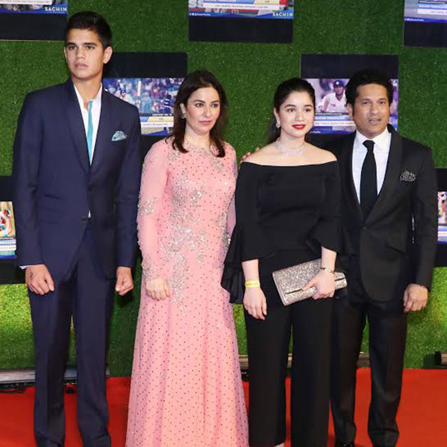
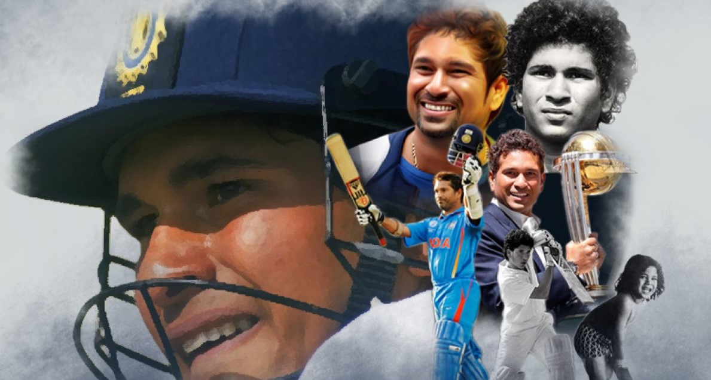
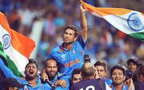

Tendulkar's Family
On 24 May 1995, Tendulkar married Anjali Mehta a paediatrician of Gujarati origin, whom he had first met in 1990.They have a daughter Sara and a son Arjun .Sara Tendulkar was born on the 12th of October 1997, and Arjun Tendulkar was born on 24 September 1999. The elder one, Sara is a graduate in Medicine from University College London.The younger one, Arjun Tendulkar, is an aspiring cricketer. But unlike Tendulkar, he is well above 6 ft and has all the reasons to become a bowler. Arjun is a left-arm pacer and batsman who has been bowling to international players in the nets at different venues in the world. He claimed a staggering 19 wickets in just 5 games for Mumbai Under-19 in the 2017-18 Cooch Behar Trophy. Arjun seems to have maturely accepted his fate of persistent limelight on him. The 19-year old has kept his composure and worked hard to make it to the U-19 Indian team. If he does make it to the Indian National Team, the pressure will rise even further with the expectations of a billion fans and legacy of one Sachin Tendulkar.
Indian Premier League and Champions League
 Tendulkar was made the icon player and captain for his home side, the Mumbai Indians in the inaugural Indian Premier League Twenty20 competition in 2008. As an icon player, he was signed for a sum of US$1,121,250, 15% more than the second-highest paid player in the team, Sanath Jayasuriya. In 2010 edition of Indian Premier League, Mumbai Indians reached the final of the tournament. Tendulkar made 618 runs in 14 innings during the tournament, breaking Shaun Marsh's record of most runs in an IPL season. He was declared player of the tournament for his performance during the season. He also won Best Batsman and Best Captain awards at 2010 IPL Awards ceremony.Sachin has scored more than 500 runs in IPL in two different seasons as a captain.
Revisit India's historic 2011 ICC World Cup
The 2011 World Cup was Sachin Tendulkar's last chance to win a World Cup before he retired from ODI's. The master blaster had waited 22 years for lifting the trophy and said it was the proudest moment of his life. Sri Lanka made the most of their opportunity while batting first and gave India a stiff target of 275. During the chase, fans were left emotionally battered after Lasith Malinga dismissed local boy Sachin Tendulkar, leaving India at a precarious 31/2 in the 6th over. A heroic innings by Gautam Gambhir along with an exceptional captain's knock from Dhoni saved India the blushes and saw Dhoni and Co. lift the World Cup after 28 years. The celebrations that night continued until the wee hours of the morning. The tri-colour was flying high and it was truly a moment for every Indian to cherish. It was no denying that April 2, 2011 was one of the greatest moments of Indian cricket. Star Sports invites viewers to experience ball to ball action and join the Indian team in lifting the World Cup once again.
Sachin Tendulkar awarded with Bharat Ratna, India's highest civilian award

Sachin Tendulkar awarded with Bharat Ratna, India's highest civilian awardSachin Tendulkar beat hockey wizard the late Dhyan Chand to become the first sportsperson to receive the Bharat Ratna.Tendulkar bows out as the most successful batsman in international cricket with 15,921 runs in 200 Tests. In his ODI career, which he needed last year, Tendulkar amassed 18,426 runs in 463 matches.
Sachin Tendulkar is the only batsman in international cricket to score 100 centuries. He was the first batsman to get a double hundred in one-dayers.
Awards and Honours
| Year of Winning | Name of the Award or Honour |
|---|---|
| 1994 | Arjuna Award |
| 1997-98 | Rajiv Gandhi Khel Ratna |
| 1999 | Padhma shri |
| 2001 | Maharastra Bhushan Award |
| 2008 | Padma Vibushan |
| 2014 | Bharat Ratna |